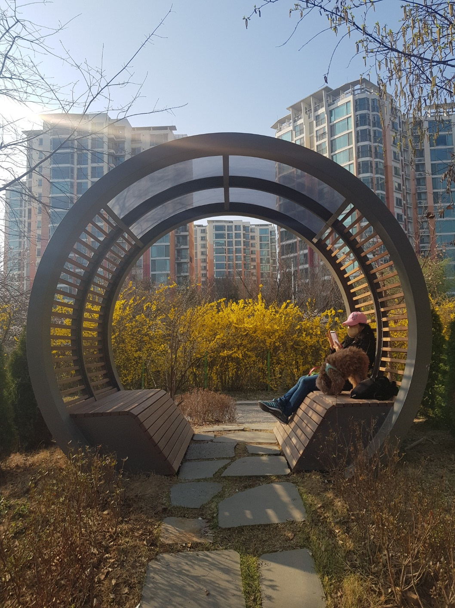
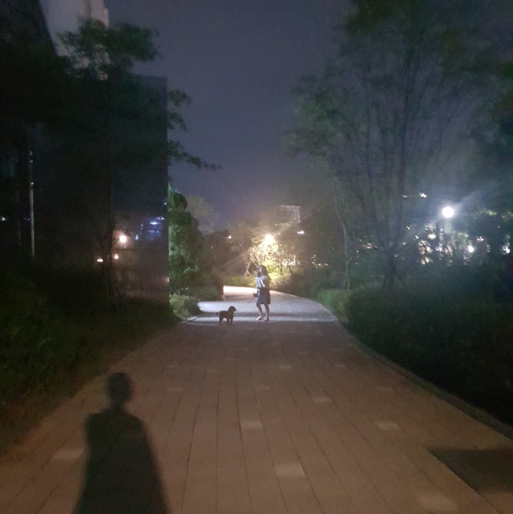

About
박스에 커서를 올려보세요!
저는 이 박스처럼 다채로운 면을 가진 사람입니다!
안녕하세요. Hello world :)
중부대학교 정보보호학과 23학번 오소망 입니다.
저의 취미는 음악을 듣고 책을 읽는 것, 드라마나 영화를 보는 것, 사진을 찍는 것입니다.
음악은 해외 POP 장르를 주로 들으며, 1900년대 음악도 좋아합니다.
아티스트는 AJR, NF, Avril Lavigne, Imagine Dragons, Arctic Monkeys, Billie Eilish, Isabel LaRosa, Connie Talbot, Merrick Hanna, Raon, Dine On, Charming Jo, AKMU 등을 좋아합니다.
좋아하는 책은 '죄와 벌', '데미안', '율리시스 무어', '테메레르', '나니아 연대기', '해리포터 시리즈', '비밀의 화원', '고양이 낸시', '환생동물학교' 등이 있습니다.
해외 드라마는 'Stranger Things', 'Wednesday', 'The Mentalist', 'The Good Doctor', 'House MD', 'The Big Bang Theory', 'Young Sheldon', 'Victorious', 'Sherlock'를 추천합니다.
아래 링크는 제가 추천하는 책, 아티스트, 음악, 드라마 목록입니다.
아래는 제가 찍은 사진들입니다. Home 페이지에도 다른 사진들이 나와 있습니다.
 